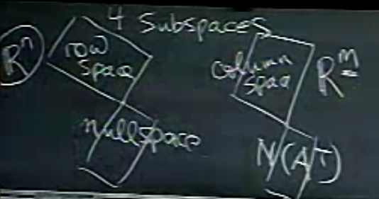

Ders 10
Lineer cebirin özüne iniyoruz şimdi, 4 temel altuzay nedir ve onların arasındaki ilişki nasıldır?
Dört Temel Altuzay
1) Kolon uzayı $C(A)$ (columnspace). Boyutları $m \times n$ olan $A$ matrisinin her kolonunun $m$ tane öğesi / hücresi vardır, o zaman $C(A)$ uzayı $\mathbb{R}^m$ içindedir.
2) Sıfır uzayı, $N(A)$ (nullspace)
3) Satır uzayı (rowspace), bir matrisin satırlarının tüm kombinasyonu. Bu kombinasyon hakkında başka hangi kelimeyi kullanabilirim? Satırlar satır uzayını kapsar (span). $A$'nin satırları bu uzay için bir baz (basis) oluşturur mu? Belki evet, belki hayır. Eğer satırlar birbirinden bağımsız ise evet.
Akla gelen bir fikir şu olabilir, satırlar ile uğraşmayı sevmiyorum, şimdiye kadar kolonlar üzerinden işleyen bir sürü araç / dil geliştirdik, bunları kullanmaya devam etmek istiyorum. O zaman basit bir çözüm şu, $A$'nin devriğini alırım, böylece satırlar kolon haline gelir ve ben de $A^T$'nin kolonlarıyla iş yapmaya devam ederim. Bildik notasyonu kullanabilirim, $C(A^T)$ mesela. Bunun işleyip işlemediğini göreceğiz.
4) $A^T$'nin sıfır uzayı, $N(A^T)$. Bu sıfır uzayına "$A$'nin sol sıfır uzayı" adı da veriliyor.

Temel altuzaylar hakkında bilmek istediklerim şunlar: Bu uzayların bazı nedir? Boyutları nedir?
$C(A)$'nin boyutu $A$'nin kertesi $r$. Bunu önceki derste bir örnek üzerinden görmüştük.
Satır uzayının, yani $C(A^T)$'nin boyutu aynen $C(A)$ gibi $r$'ye eşit, yani matris kertesi ile aynı.
Alttaki matrisin satır boyutu nedir?
$$ \left[\begin{array}{rrr} 1 & 2 & 3 \\ 1 & 2 & 3 \\ 2 & 5 & 8 \end{array}\right] $$
Boyut sayısı 2'dır. Satırlara bakınca 1. ve 2. satır aynı, bağımsız sadece iki tane satır var. Kolon ve satır uzaylarının boyut eşitliği kuralından hareketle, o zaman kolon uzayı boyutu da 2. Eliminasyon sırasında 2 tane pivot kolonu çıkacaktır, ve kolonlar da bağımlıdır. Bu örnek aslında ilginç çünkü kolonlara bakınca bağımlılık bariz değil (3. kolon 1. ve 2. kolonun direk toplamı değil mesela), ama satırlara bakınca bağımlılık belli oluyor.
Sıfır uzayı için baz özel çözümlerdir, ki eğer hatırlarsak, her serbest değişken için bir özel çözüm vardır. Özel çözüm sayısı ise $n-r$, o zaman sıfır uzayı boyutu $n-r$. Demek ki sıfır uzay için özel çözümler bir baz oluştururlar.
$N(A^T)$'nin boyutu ise $m-r$, çünkü $A^T$'nin kolon sayısı $A$'nin satır sayısı, kolon sayısını elde edince geri kalan işlem üstteki sıfır uzayı ile aynı, $N(A^T)$'nin serbest değişken sayısı devreye girer, vs.
Şimdi baz bulma konusuna dönelim; kolon uzayının bazını bulmayı biliyoruz, pivot içeren kolonlar baz oluşturur. Peki satır uzayı için bazı nasıl buluruz? Akla hemen şu gelebilir, matrisin devriğini alırım, ve o devrik üzerinde bildiğim işlemleri yaparım, eliminasyon, pivot bulma, vs. Ama bu fikre balıklama atlamadan önce, acaba bildiğimiz tekniği olduğu gibi kullanmak acaba daha iyi bir fikir olabilir mi? Bir örneğe bakalım, klasik eliminasyon senaryosu uygulayalım,
$$ \left[\begin{array}{rrrr} 1 & 2 & 3 & 1 \\ 1 & 1 & 2 & 1 \\ 1 & 2 & 3 & 1 \end{array}\right] \rightarrow \left[\begin{array}{rrrr} 1 & 2 & 3 & 1 \\ 0 & -1 & -1 & 0 \\ 0 & 0 & 0 & 0 \end{array}\right] $$
İkinci pivot'ta eksi olmayan değer istiyorum, 2. satırı -1 ile çarpayım. Sonra 2. satır 2 ile çarpıp 1. satırdan çıkartayım,
$$ R = \left[\begin{array}{rrrr} 1 & 0 & 1 & 1 \\ 0 & 1 & 1 & 0 \\ 0 & 0 & 0 & 0 \end{array}\right] $$
Bunlar bildiğimiz işlemler. Şimdi sol üst köşede $2 \times 2$ boyutlu $I$ var, hemen yanında $F$, ve en alt satır sıfır.
Neler olduğuna dikkat edelim, üstteki işlemler sırasında matrisin kolon uzayı değişti. Yani artık $A$'nin kolon uzayı $R$'nin kolon uzayı ile aynı değil, $C(A) \ne C(R)$. Satır işlemleri yaptık (satır uzayı değişmedi), ve kolon uzayında değişime sebep olduk.
Neyse; şimdi $R$'nin satır uzayı için baz nedir, ki bu baz $A$'nin aynı olan satır uzayı için de aynı olacaktır? $R$'den bariz görülüyor, ilk iki satırı, yani ilk $r$ satırı, baz oluşturur. Bu şekilde satır uzayını bulmak faydalı çünkü eliminasyon sırasında $R$'yi zaten olabileceği en temiz hale getiriyorum, bu işlem tamamlandıktan sonra $R$'den bazları çekip çıkartabilirim.
Bir soru: madem bir baz elde ettim, $A$'nin satırlarının $R$ satırlarının kombinasyonu olup olmadığından nasıl emin olabilirim? Çok basit, eliminasyon sırasında yaptığım işlemleri tersine çevirirsem, bir tür kombinasyon işlemi yapmış olurum, ve bu kombinasyon bana kesinlikle $A$'nin satırlarını verecektir, çünkü başlangıç noktam zaten $A$ idi.
Nihayet son uzayımız, $N(A^T)$'nin uzayı için bir baz nasıl bulurum?
Bu uzaya niçin "sol" sıfır uzayı deniyor?
Bu uzayın içinde vektörler vardır, tabii ki, $A^Ty = 0$ denklemini tatmin eden $y$'ler bu vektörlerdir. Bu denklemin devriğini alırsam,
$$ y^TA = 0 $$
Bu denkleme göre yatay vektör $y^T$, $A$'yi "soldan" çarpıyor, sol sıfır uzayı sözü buradan geliyor. Fakat bu bir kullanım şekli tabii, ben şahsen $A^Ty=0$ formunu tercih ediyorum [herhalde devrik alma sebebi $A^T$'yi $A$ haline getirmek, bu işlem sırasında $y$ de "sola" geçmiş oluyor].
Bazı nasıl bulurum?
$A$ üzerinde pivot bulma, eliminasyon gibi işlemler bize $R$'yi vermişti, bu işlemler tabii $A$ üzerindedir, $A^T$ üzerinde değildir, ama sezgisel olarak bu işlemlerin bize sol sıfır uzayı hakkında da birşeyler söylediğini tahmin edebiliriz. $A$'dan $R$'ye gelirken bazı işlemler yaptık, ve bu işlemlerin tamamı ile ilgileniyorum, yani bu tüm işlemleri temsil eden o tek matrisle ilgileniyorum. Bu matrisi nasıl buluruz?
Gauss-Jordan'ı hatırlıyor musunuz? Hani matris üzerinde işlemler yaparken ona yandan bir ekstra birim matrisi eklemiştik. GJ kullanımını bir kare matrisin tersini almak için kullanmıştık. Şimdi matris kare değil, çoğunlukla dikdörtgen, ama yine de birim matrisi ekleyebiliriz,
$$ \left[\begin{array}{rr} A_{m \times n} & I_{m \times m} \end{array}\right] $$
Ve bu matris üzerinde rref uygularım. Sonuç ne olur? $A$ tabii ki $R$'ye dönüşecek, aynı işlemler $I$ üzerinde de uygulanmış olacak, ve orada da ortaya bir matris çıkacak, bu matrise $E$ matrisi diyelim,
$$ \left[\begin{array}{rr} R_{m \times n} & E_{m \times m} \end{array}\right] $$
Eğer düşünürsek $E$ matrisinin $A$ üzerinde yaptığımız tüm işlemlerin bir kayıdı olduğunu görebiliriz. İşlemlerimizin arkada bıraktığı "iz" bu $E$ içinde bir bakıma. O zaman şunu da söyleyebiliriz, $A$ üzerinde yaptığımız işlemler $E$ içindeyse, o zaman
$$ E \left[\begin{array}{rr} A_{m \times n} & I_{m \times m} \end{array}\right] = \left[\begin{array}{rr} EA & EI \end{array}\right] = \left[\begin{array}{rr} R_{m \times n} & E_{m \times m} \end{array}\right] $$
çünkü
$$ EA = R $$
Daha önce Gauss-Jordan gördüğümüzde amacımız matris tersi almaktı, hedefimiz $R$'e erişmek değil, $I$'ya erişmekti, ve $E$ bize $A$'yi değiştirip $A^{-1}$'yi vermişti. Burada hedef farklı, fakat ana fikir aynı.
Biraz önceki örneğimiz üzerinde görelim,
$$ A = \left[\begin{array}{rrrr} 1 & 2 & 3 & 1 \\ 1 & 1 & 2 & 1 \\ 1 & 2 & 3 & 1 \end{array}\right] $$
Bu matrisi $R$'ye dönüştürmek için yaptığım tüm işlemleri $3 \times 3$ boyutlu bir $I$ üzerinde uygularsam,
$$ \left[\begin{array}{rrr} -1 & 2 & 0 \\ 1 & -1 & 0 \\ -1 & 0 & 1 \end{array}\right] $$
Bu zannediyorum ki $E$. Kontrol etmek için $A$'yi bu matrisle soldan çarpalım, ve $R$'yi elde edip etmeyeceğimizi görelim,
$$ \left[\begin{array}{rrr} -1 & 2 & 0 \\ 1 & -1 & 0 \\ -1 & 0 & 1 \end{array}\right] \left[\begin{array}{rrrr} 1 & 2 & 3 & 1 \\ 1 & 1 & 2 & 1 \\ 1 & 2 & 3 & 1 \end{array}\right] $$
E = np.array([[-1,2,0],[1,-1,0],[-1,0,1]])
A = np.array([[1,2,3,1],[1,1,2,1],[1,2,3,1]])
print np.dot(E,A)
[[1 0 1 1]
[0 1 1 0]
[0 0 0 0]]
Evet, $R$'yi elde ettik.
Tüm bunları $A$'nin sol sıfır uzayını elde etmek için yaptım. Daha ilerlemeden, bu arada, sol sıfır uzayının boyutu nedir? Boyut $m-r$, yani 3-2=1, yani boyut 1. Yani baz tek bir vektör, yani $A$'nin satırlarını kombine edip sıfır sonucunu ortaya çıkarabilecek tek bir vektör var.
O vektör nedir? $E$'nin son satırı bize o vektörü gösteriyor, çünkü o satır $A$'yi soldan çarparken $A$'nin satırlarını kombine ederek $R$'nin tamamen sıfır olan o son satırını ortaya çıkartmıştır.
$$ R = \left[\begin{array}{rrrr} 1 & 0 & 1 & 1 \\ 0 & 1 & 1 & 0 \\ 0 & 0 & 0 & 0 \end{array}\right] $$
Yani $R$'nin son satırına tekabül eden $E$'nin son satırı aradığımız vektördür.
Bu sonucu bulmak için $E$'yi ortaya çıkartmamız gerekti, fakat bu işlem daha doğal, $A$'nin devriğini alıp onun üzerinde daha çetrefil işlemler yapmak gerekmedi.
Dört altuzay işte bunlardır.
Bu dersi kapatmadan önce şimdiye kadar görmediğimiz yeni bir tür vektör uzayından bahsetmek istiyorum.
Bir örnek, tüm $3 \times 3$ boyutundaki matrisler. Ama bir dakika diyebilirsiniz, vs. boyutundaki matrisler nasıl bir vektör uzayı ortaya çıkarabilirler. Fakat biraz düşünürsek, matrislerin vektör uzayı oluşturmak için vektörler üzerinde uyguladığımız kurallara aynen uyabileceğini görürüz. Matrislerin lineer kombinasyonlarını alabilirim, onları bir skalar (tek sayı) ile çarpabilirim, vs. Vektör uzayları için geçerli tüm kurallar burada da geçerli olabilir.
Peki altuzaylara ne olur? Bu "matris uzayının", ki üstteki örnekteki uzaya $M$ diyelim şimdilik, bir altuzayı var mıdır? Bir tane bulayım mesela.. tüm $3 \times 3$ boyutundaki.. üstüçgensel matrisler. Ya da.. simetrik matrisler. Devam edelim; İki altuzayın kesişiminin yeni bir altuzay olduğunu biliyoruz, hatta önceki bir derste bunu ispatlamıştık bile, o zaman simetrik ve üstüçgensel matrislerin uzaylarının kesişimini kullanabilir miyiz? İlginç bir durum bu aslında, çünkü üstüçgensel matrislerin köşegeni (diagonal) altında tamamen sıfır vardır, eğer simetriklik şartı arıyorsak, o zaman köşegenin üstü de sıfır olmalıdır, o zaman geriye sadece köşegeninde değerler olan matrisler kalır, ki bu matrisler köşegen (diagonal) matrislerdir. Bir altuzay da bu yani, köşegen matrisler, tabii üstüçgensel ve simetrik matrislerin altuzayından daha küçük bir altuzay.
Bu kelimeyi kullanabilir miyim? Küçük? Bu durumda küçüklük ne demektir? Eh, köşegen matrislerin altuzayı diğerlerinin içindedir, vs. Fakat daha spesifik olarak altuzay boyutu kavramını kullanabilirim şimdi; Tabii boyut için bir baz hesaplamam gerekli, bunu yapınca bu bazda kaç tane eleman olduğunu sayarım ve sonucu bulurum. Köşegen matris altuzayı için, bence bu sayı 3. Nereden biliyorum? Mesela üç tane matris yazacağım,
$$ \left[\begin{array}{rrr} 1 & 0 & 0 \\ 0 & 0 & 0 \\ 0 & 0 & 0 \end{array}\right], \left[\begin{array}{rrr} 1 & 0 & 0 \\ 0 & 3 & 0 \\ 0 & 0 & 0 \end{array}\right], \left[\begin{array}{rrr} 0 & 0 & 0 \\ 0 & 0 & 0 \\ 0 & 0 & 7 \end{array}\right] $$
Bence bu bir baz. Birbirinden bağımsızlar, ve tüm köşegen matrisler bu üçünün bir kombinasyonu, yani bu üç matris tüm köşegen matrisler altuzayını kapsıyorlar.
Şimdiye kadar gördüğümüz fikirleri yeni bir ortam için bayağı esnettik, fakat fikirler burada da geçerli.